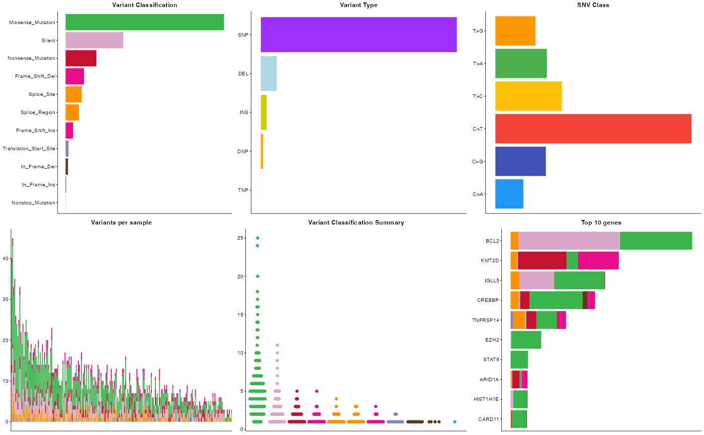
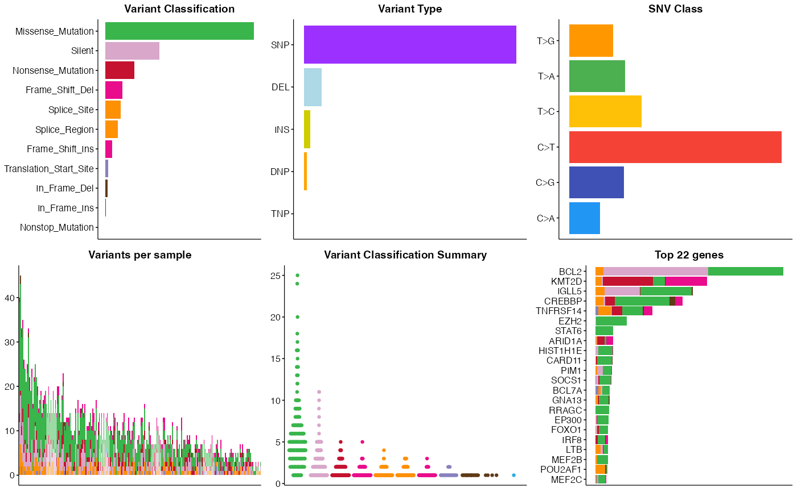

Pretty MAF summary
pretty_MAF_summary.RdGenerates a visually appealling alternative to MAFtools `plotmafSummary“.
Usage
pretty_MAF_summary(
maf_data,
these_samples_metadata,
base_size = 4,
top_n = 10,
point_size = 0.5,
one_per_sample = FALSE,
gene_sizes,
returnEverything = FALSE
)Arguments
- maf_data
A data frame containing the mutation data.
- base_size
Base size of fonts to use in Morons theme
- top_n
Number of genes to show in top_n panel (default 10)
- point_size
Size of points to use in ggbeeswarm plot (default 0.5)
- returnEverything
Set to TRUE to get the underlying numbers and all panels as a list
Details
This function reproduces the multi-panel MAF summary plot generated by MAFtools. The colour, plot aesthetics etc utilize GAMBLR colours and are consistent with other GAMBLR.viz plots such as prettyOncoplot.
Examples
suppressMessages(library(GAMBLR.open))
FL_meta <- GAMBLR.open::get_gambl_metadata() %>%
dplyr::filter(pathology == "FL") %>%
check_and_clean_metadata(.,duplicate_action="keep_first")
#> Using the bundled metadata in GAMBLR.data...
FL_coding <- GAMBLR.open::get_coding_ssm(these_samples_metadata = FL_meta)
#> Using the bundled SSM calls (.maf) calls in GAMBLR.data...
#> after linking with metadata, we have mutations from 215 samples
pretty_MAF_summary(FL_coding)

pretty_MAF_summary(FL_coding, top_n = 22, base_size = 6)
